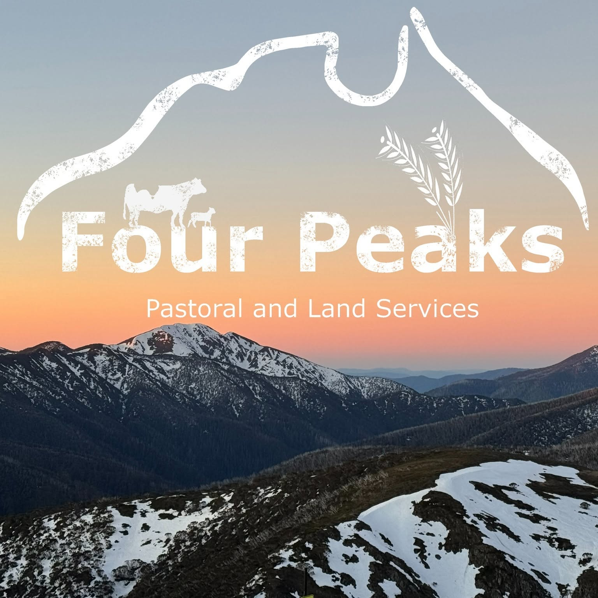

Baseline and planning
Current site information before treatment, planting or development begins.
- High-resolution baseline mapping
- LiDAR terrain and vegetation surveys
- Project planning and geospatial analysis
- GIS data preparation and management
Service
Aerial mapping, application, monitoring and verification across restoration, revegetation and carbon project lifecycles.

Long-term projects work better when baseline data, field operations and repeat monitoring use the same spatial framework. Four Peaks can support individual stages or plan the aerial work across the project.
That continuity makes it easier to compare change, direct maintenance and prepare a clear record for project managers, landholders and reporting teams.
Project lifecycle
The service can be scoped for one defined task or coordinated across multiple project stages.
Current site information before treatment, planting or development begins.
Targeted aerial operations for preparing and establishing project areas.
Repeat evidence to show establishment, condition and emerging priorities.
Project record
Each project stage produces an organised record that can be compared with earlier work and used to plan what happens next.
Tell us the project stage, site, current data, field work required and the evidence your team needs at each milestone.